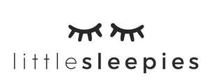

Trade Mark Journal No.2025/014 4 April 2025
UK00004155671 4 February 2025 (18,25,28,35)

International priority date claimed: 14 January 2025
(United States of America)
(98960317)
- Class 18
- Pet clothing, namely, pet bandanas and pet pajamas.
- Class 25
- Pajamas; sleepwear; fabric sold as an integral component of finished clothing items, namely, sleepwear; swaddling clothes; infant wearable blankets; infant gowns; cloth bibs; robes; dressing gowns; bath robes; hats; headbands; beanies; bandanas; shirts; t-shirts, dresses; pants; sweaters; shorts; sweatshirts; hoodies; baby bodysuits; bodysuits; sleep masks; sweatpants; jogging pants; leggings; skirts; skorts; tutus; rompers; jumpsuits; overalls; jackets; clothing jackets; cardigans; coats; underwear; apparel for nursing mothers, namely, tops, shirts and nursing bras; socks.
- Class 28
- Plush toys with attached comfort blanket; stuffed and plush toys; stuffed toy animals.
- Class 35
- Online retail store services in relation to sleepwear, pajamas, swaddling clothes, infant wearable blankets, infant gowns, cloth bibs, robes, bath robes, dressing gowns, hats, headbands, beanies, bandanas, underwear, sleep masks, shirts, t-shirts, dresses, pants, socks, sweaters, shorts, skorts, sweatshirts, hoodies, bodysuits, baby bodysuits, sweatpants, jogging pants, leggings, skirts, tutus, rompers, jumpsuits, overalls, jackets, cardigans, and coats; online retail store services in relation to apparel for nursing mothers, namely, tops, shirts, and nursing bras; online retail store services in relation to plush toys with attached comfort blanket, stuffed and plush toys, and stuffed toy animals; online retail store services in relation to pet clothing, namely, pet bandanas and pet pajamas.
Little Sleepies, LLC
Representative: Haseltine Lake Kempner LLP